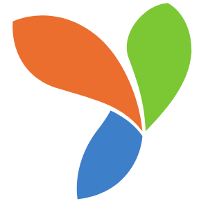

Passione e Dedizione
in ogni particolare
ABOUT ME
Mi chiamo Gianni Caruso, sono un Ingegnere Informatico di Partinico, un paese in provincia di Palermo. Nato e cresciuto nella splendida Sicilia, conseguo il diploma di Liceo Scientifico nel 2017 e nello stesso anno inizio il mio percorso presso l'Università degli studi di Palermo, scegliendo la facoltà di Ingegneria Informatica. Da sempre appassionato di tecnologia e software, scelgo nel 2019 di frequentare il corso di Web Designer Developer presso la scuola Microsales di Palermo, in cui ottengo certificazioni Microsoft, Adobe e Google e imparo a padroneggiare tecnologie come HTML e CSS, Javascript, PHP e programmi di grafica come Photoshop.
Nel 2020 vengo assunto come fullstack Developer presso la Control Security Service, un'azienda di Palermo operante nel campo della geolocalizzazione e del tracciamento auto. Entro poi, nel 2021, in Capgemini Engineering come IT Consultant all'interno del settore Energy di quest'ultima. Conseguo nel Marzo del 2022 la laurea triennale in Ingegneria Informatica.
competenze e tecnologie conosciute
 Html & Css
Html & Css
 Javascript
Javascript
 Bootstrap
Bootstrap
 PHP
PHP
 Yii2
 Angular
Angular
 React
React
 NodeJS
NodeJS
 Java
Java
 Git
Git
 MySQL
MySQL
 MongoDB
MongoDB
Curriculum
Formazione
Laurea Triennale in Ingegneria Informatica
Analisi Matematica 1, Calcolatori Elettronici, Fisica 1, Algebra e Geometria, Analisi Matematica 2, Elettrotecnica, Fisica 2, Programmazione, Basi di Dati, Teoria dei Segnali, Metodi Numerici, Reti di Calcolatori e Internet, Controlli Automatici, Algoritmi e Strutture Dati, Fondamenti di Elettronica, Sistemi Operativi, Programmazione Web e Mobile, Ingegneria del Software, Disegno Assistito da CalcolatoreAdobe Certified Associate
Visual Design using Adobe Photoshop©verify.certiport.com - UWFo-sFNX
Adobe Certified Associate
Web Authoring using Adobe Dreamwaver© CC 2015verify.certiport.com - eVV8-4TKV
Microsoft Technology Associate
Introduction to Programming using HTML & CSSverify.certiport.com - UpWH-sFc4
Lavoro
Capgemini Engineering©
Junior IT ConsultantJunior IT Consultant presso il settore EILIS di Capgemini Engineering, azienda leader nel campo della consulenza e Junior Fullstack Developer nel team si sviluppo interno.
Ass. Ideazione ONLUS - Comune di Alcamo
Operatore informaticoOperatore Informatico presso i Servizi Sociali del Comune di Alcamo tramite l'Associazione Ideazione ONLUS. Addetto alla risoluzione di problemi di natura informatica presso gli uffici dei Servizi Sociali del Comune, e responsabile del progetto migliorativo "MOSAICO"
Control Security Service s.r.l
Fullstack DeveloperManutenzione ed evoluzione di un sistema informatizzato per la gestione di dispositivi satellitari e il loro monitoraggio da centrale operativa. Evoluzione server d’ascolto per dispositivi GL500, GV55 e Queclink attraverso protocollo TCP e UDP. Gestione ticket per furto del veicolo, crash, geowarning, attacco e stacco cavi etc. Tracciamento in tempo reale dei mezzi e configurazioni tramite SMS.